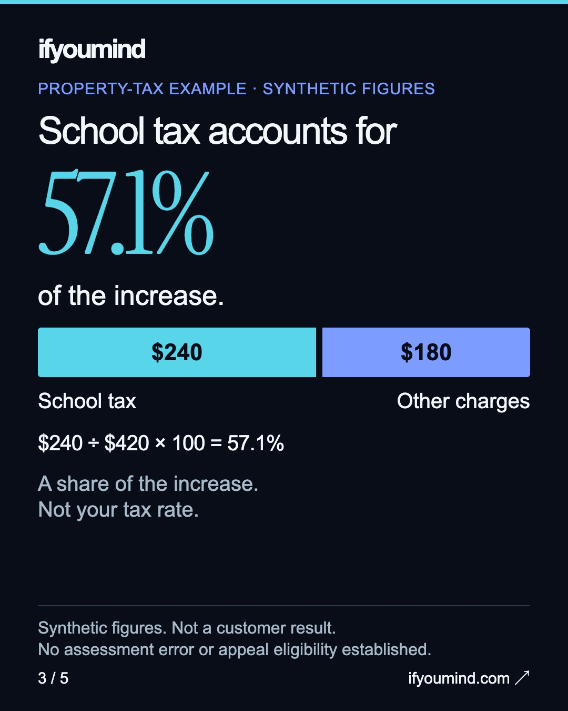

Registry: docs/marketing/assets.json. Final export approval is separate from direction, hosting and publication.

Your property-tax bill increased by $420. What changed? In this synthetic example, $240 of the increase came from school tax — 57.1% of the total change. Follow the figures, check the calculation, and see what the evidence establishes. Your numbers have a story. Reveal what changed. Try the free example at ifyoumind.com. No account needed for the example. Illustrative figures, not a customer result. These figures do not establish an assessment error or eligibility for an appeal. This is a deterministic bill example, not AI-based tax analysis.
property-tax-carousel-01-v2: Synthetic property-tax example: the annual total rises from $4,200 in 2024 to $4,620 in 2025, an increase of $420. What changed? No assessment error or appeal eligibility is established.
property-tax-carousel-02-v2: Synthetic example: $240 of the $420 increase came from school tax. Zero-based bars compare $2,400 in 2024 with $2,640 in 2025. $2,640 minus $2,400 equals $240. No assessment error or appeal eligibility is established.
property-tax-carousel-03-v2: Synthetic example: school tax accounts for 57.1 percent of the $420 increase. A proportional bar shows $240 school tax and $180 other charges. $240 divided by $420 times 100 equals 57.1 percent, rounded. This is not a tax rate or evidence of an assessment error or appeal eligibility.
property-tax-carousel-04-v2: Understanding an increase does not mean your bill is wrong. Synthetic figures show which charges changed and how much they contributed. They do not establish an assessment error or eligibility for an appeal.
property-tax-carousel-05-v2: Your numbers have a story. Reveal what changed. An authentic preview of the live free illustrative tax example shows the $420 increase and school-tax contribution. Try the free example at ifyoumind.com; no account needed for the example. Synthetic figures do not establish an assessment error or appeal eligibility.